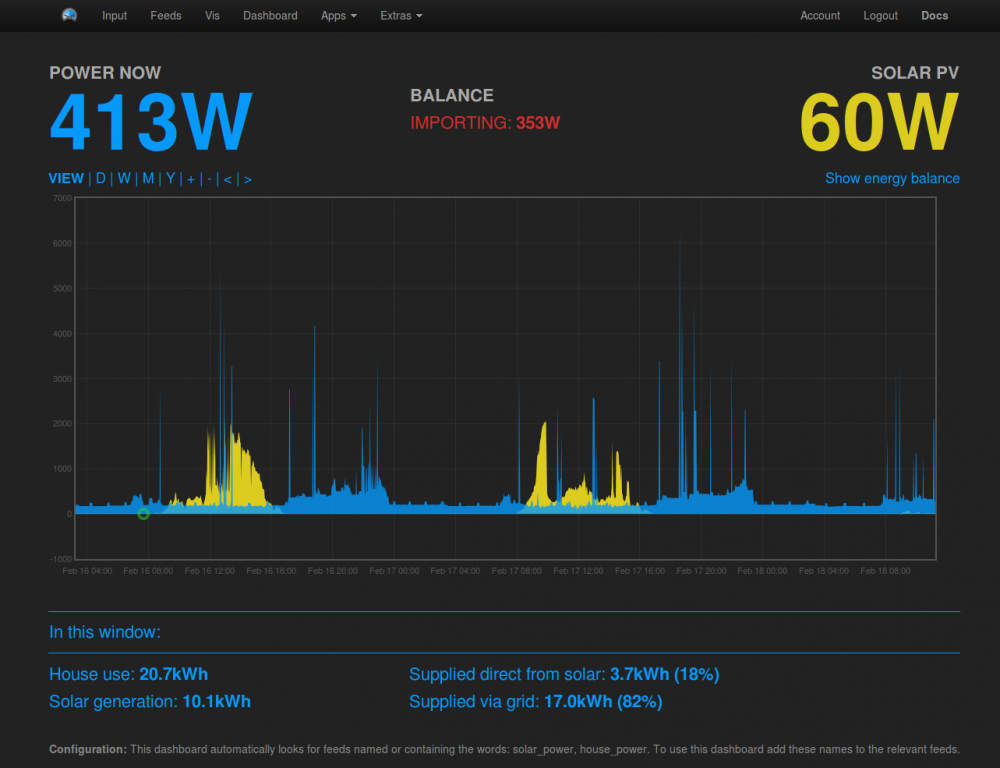
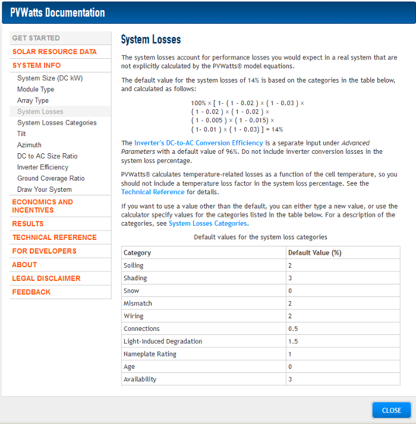
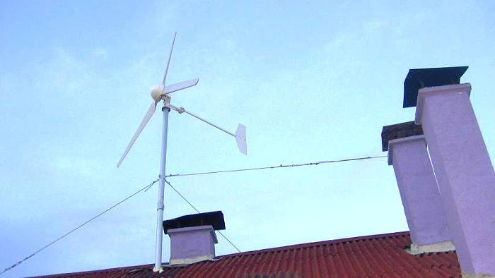

As i try to wrap my head around features of the emoncms it became obvious for me how to make one very useful addition to what is already developed.
In this thread Trystan has developed a nice visually attractive plugin for solar and wind energy.

In this thread i am looking for an easy way to integrate weatherstation data into the emoncms.

And if these two features are combined, one can easily estimate the energy potential of a building/location.
The weather station will always be aware of the amount of wind in a certain location. And the same weather station will also be aware of the total amount of solar energy /m2 in the same location.
So IF the emoncms gets a nice, simple way to plugin a weather station for wind, solar, temperature, humidity feeds..
AND the plugin for solar&wind energy in the emoncms gets a feature to cooperate with that data..
Then the data could be used to determine what size solar panels would be needed in that certain location, and how much energy they would produce during one year during those conditions. Since the weather station operates in the exact same location as the solar panel would be, or the wind energy generator, it could simulate the energy generated by a chosen installation.
So by providing the basic data of the installation, diagrams could be built to show when and how much energy will be available and from which directions.
This data could be matched to compare with energy needs in the same building, and the installations could be optimized from that. For example what time of the day hot water is used, and what angle the solar heating for water should be to optimize for this. It can also calculate the size that is needed to provide the amount of hot water that is used.
This can be very useful.
Is there anyone who has ideas about how to combine the available plugin with a weather station feed?
Formula for calculation of wind mills is quite simple:
Energy [kWh] = 2.09 • Diameter2 [m] • Wind3 [m/s]
This could be very interesting!
//J
Re: Solar and Wind simulation feature for estimation of available capacity
Nice idea. But it seems like a "re-invention of the wheel," as PV system performance estimation apps already exist.
Here's one of them: pvwatts.nrel.gov
It can calculate a PV system output estimate for any location in the world.
Re: Solar and Wind simulation feature for estimation of available capacity
Bill, i think you are missing the point..
There can be one million different applications that calculate solar and wind energy potential from general physical facts and historical data.. I use them in my work, and its the best way to go today. People selling this equipment use these methods. And now some companies offer services that allows you to measure directly on google maps how much energy you can harvest.
Is this the most effective way to estimate energy potential for a building?
However i have never seen someone using real data to calculate this with high accuracy.
The weather station already has solar energy meter built in, and wind speed meter. It can measure solar power actually hitting the building. It can be a really nice feature for people who are going to make installations and want to know exactly what size panels to pick. Simulation can be compared to energy consumption in a simple graph to determine if energy arrives when needed. Solar radiation meters have other uses as well for energy monitoring in buildings.
Lots of buildings are situated in less favorable surroundings. Maybe trees around the house, maybe other high buildings. How can the solar calculation applications add these factors in? Well usually they don't. Its based on physical theory rather then real world measurements.
The same goes for smaller wind mills. They are located very close to the ground, and normal "wind mapping" is not for that low levels. Wind speed is very local.
With this feature one user can simply evaluate one specific spot, and compare it to another spot, before buying and placing a wind mill. Also the size of the windmill can be picked with high accuracy if there is a long historical data from a spot.
Also the most important feature is that this could encourage many people when they see how much energy potential their local spot actually has, and how much energy there is to harvest.
Weather stations are now very cheap, and this is a very simple way to combine existing technology into something that is very useful. A weather station is less then €200, and this is only two of all the features that can come with this station and simple integration into apps that is already developed.
Putting the correct size solar panels, or choosing the correct spot for the wind mill will save you a lot more then €200. Not to mention avoiding installations that should not have been done due to bad surroundings.
I think of this as a really nice feature to add. Maybe it will inspire people to add small windmills or solar panels to their houses. Or avoid buying something that will not work in their specific location.
//J
Re: Solar and Wind simulation feature for estimation of available capacity
How can the solar calculation applications add these factors in?
System losses due to shading, panel soil, snow, mismatch, wiring, connections, light induced degrading, panel age, etc can be made part of the calculation, so the result is not an estimate based solely on climate data.

As to small wind turbines, Hugh Piggot, one of the UK's foremost small wind system experts, and the two Dans - Dan Fink and Dan Bartmann, USA small wind experts, all say: A small wind system must be a minimum of 10 meters above any ground obstructions within a 150 meter radius from the turbine.
These two articles explain why small wind systems don't work well for most people, e.g. the average homeowner: www.solacity.com/smallwindtruth.htm www.solacity.com/siteselection.htm
An excerpt from the article:
Wind turbines need wind. Not just any wind, but the nicely flowing, smooth, laminar kind. That cannot be found at 30 feet height. It can usually not be found at 60 feet. Sometimes you find it at 80 feet. More often than not it takes 100 feet of tower to get there. Those towers cost as much or more, installed, as the turbine itself. How much tower you need for a wind turbine to live up to its potential depends on your particular site; on the trees and structures around it etc. Close to the ground the wind is turbulent, and makes a poor fuel for a small wind turbine.
Wind turbines do work; put them in nice, smooth air and their energy production is quite predictable (we will get to predicting it a bit further on in this story). The honest manufacturers do not lie or exaggerate, their turbines really can work as advertised in smooth, laminar airflow. However, put that same turbine on a 40 feet tower and even if the annual average wind speed is still 5 m/s at that height, its energy production will fall far short of what you would predict for that value. How short is anybody's guess, that is part of the point; it is impossible to predict the effect of turbulence other than that it robs the energy production potential of any wind turbine. Roof tops, or other locations on a house, make for poor turbine sites. They are usually very turbulent and on top of that their average wind speeds are usually very low.
Dan F and Dan B's website: otherpower.com
Hugh Piggot's website: www.scoraigwind.com
Articles by Paul Gipe: www.wind-works.org/cms/index.php?id=113
Re: Solar and Wind simulation feature for estimation of available capacity
I understand your point, but still i don't think you understand mine.
Obviously google did in a way:
Google maps solar calculator
The way this is calculated today is either not accurate enough, or not cheap enough. And most definitely not available enough to users who are not already looking for it. A good calculation is to time consuming and expensive for most situations. A fast calculation is not accurate enough in a complex situation.
The best calculation would be for free, and with no hassle for the consumer. And accurate for the location. Based on real world numbers and not estimates or statistics.
Even if the calculation application can use for example a shading factor of 3%, its still not anywhere close to being correct in complex situations. What does it mean, shading factor 3%? Who is going to estimate this number? A professional or the consumer who is going to buy the product? Who is going to do this calculation if using a complex application or making qualified estimates is needed? How correct will it be?
When we do energy calculations for our customers we can add shading and wind screening from surrounding buildings. You cant do that if you don't have drawings, measures and complete plans for the area. Most of the time you need to actually visit the building and measure the whole site if your aim is to get it perfectly correct. Visual solar simulations can be done. And that is way more time consuming then anything else. These kind of calculations are good for large and expensive installations. Still it will not be as exact as a unit that actually measures the real world solar radiation in that spot for a period of time. A weather station does this. All day, all year. And it's cheap.
People are not interested in using complex calculators, they prefer to use simple calculators or just get a straight answer from the dealer. Why? Because they don't want to walk around the house and measure all the buildings, telephone poles, trees and make a complex calculation for this. They just want to know how much money they will save from using wind or solar energy to heat water or generate electricity. How can we give them this answer in a simple and still correct way?
If the calculation needed is as complex as your example, they will ask a technician/dealer to do it. The technician will not use this complex technique unless the customer pays for it. Or this calculation cost will be added to the price if the customer buys the product from the technician. In the end the price of the product is much more if it takes to much effort to calculate the size or location of installation that is needed. Will this increase the amount of installed solar panels or small windmills in our surroundings?
Most companies who supply this kind of installations (on my market) does not calculate carefully because it's to time consuming to visit the customers just to give estimate and price. We charge €100/hour and up for consulting. We cannot advise customers for installations that are small and cheap, we are to expensive.
Picking the correct size for panels or mills is important in situations where you cannot export to grid.
Regarding wind energy your article states exactly my point. There are to many variables involved when putting windmills, so that the only safe way to do it is in a way that pretty much destroys the potential for average users. Some dealers (stealers) wil actually fool you to put a windmill that does not fit the location, or will never deliver anywhere close to the theoretical potential. The dealer will fool the consumer into putting this installation that is not needed and will never create any value.
Most people will not go for a 20m pole with a windmill just to be safe. Large private mills like 5kW are not interesting for the normal consumer. But smaller mills like 0,5-1kW might be. Maybe they are used to power pumps for water irrigation, hot water for a weekend house on the beach or stuff like that.
Turbulence will be difficult to determine and measure. Not even a weather station can do this. But the station can tell if there is at least wind on the location, and it can tell if it is a steady, smooth constant wind or if it has big variations. For many customers this is the whole point. They don't know if they have any wind on the roof, or how much it is, or when it is blowing.
These are some examples of small, simple wind mill installations where it is very difficult to pre determine the output:
In all these situations a simple weather station could give at least some idea about how much energy there is to harness, and when. And what happens if you pick another location on the same roof or in the same field.
People are using windmills in all kinds of situations. Same goes for solar power.
Most people don't even bother to calculate the potential they have in their surrounding because it is to difficult to get a good answer, or to expensive. Lots of people who offer calculations wants to sell their products. The calculations sometimes cannot be trusted if it's done by the same company who sells the equipment.
If the consumer have this data right under their nose from their energy monitoring software, that might be the trigger for them to install. Or the brake for them not to install something useless that the market is trying to push in their lap with bad calculations. Either way, this can be useful for many people who install energy monitoring and weather stations hardware in their houses.
If we (openenergymonitor.org) can deliver a way to do this, with software or hardware that is already there, then this might increase the amount of installed solar panels and wind mills. This means this project is contributing to something that the private market is still struggling with, and that google just made an attempt to address.
When i was in university we used paper and pencil to make energy calculations for buildings, today i use dynamic calculations in computer software. Both are very time consuming, one of them is very exact. But if i could use a energy monitoring system inside the building and a good calculation/analyzing technique from that, it would be more precise then any theoretical calculation possible. Because it uses real world input.
Emoncms energy calculation feature
Emoncms open BEM
This is what a weather station and the emoncms can do for solar and wind power, automatically, for free and correct for the location.
I hope you understand the difference.
//J
Re: Solar and Wind simulation feature for estimation of available capacity
The articles provided by Bill were all very good information on the wind mills, one of the articles states that a usable formula for calculating energy potential from wind mills looks like this:
Energy [kWh] = 2.09 • Diameter2 [m] • Wind3 [m/s]
Attached is also a table of wind mill sizes and wind speed to calculate the energy potential of windmills.
It seems that building a small windmill simulator can be very easy, the user only needs to put one variable (diameter) and the rest can be calculated from weather station data with some smaller adjustments for variation in wind speed.
This formula is for horizontal axis turbine and calculates optimal installation situation.
Quote:
For vertical axis windmills this is stated:
This are probably all the information needed to create a simple wind mill simulator for the emoncms, if there is local weather station data available. And it will be more accurate then most statements or calculations provided by the people actually selling these installations.
The simulator will be very good for people who really need to use this kind of installations du to various reasons, or people who want to evaluate for other reasons.
//J
Re: Solar and Wind simulation feature for estimation of available capacity
These are some examples of small, simple wind mill installations where it is very difficult to pre determine the output:

excerpt from the article: (www.solacity.com/smallwindtruth.htm)
The Warwick Wind Trials report, in Great Britain: This evaluates 26 building-mounted small wind turbines. For anyone considering putting a turbine on their roof this is an eye opener; the results are p**s-poor. Some turbines used more power than they produced!
The CADMUS Group report, in Massachusetts: 21 sites with small wind turbines were evaluated. The best sites produced around 80% of predicted energy yield, most were around 50% - 60% of predicted energy production.
The British Energy Savings Trust report titled "Location, location, location": This requires some reading-between-the-lines as the Trust is rather closely aligned with the small wind industry. They looked at 57 turbines for a year, a number of them building mounted, others tower mounted, and concluded that building mounted turbines did very poorly.
The Zeeland small wind turbine test, The Netherlands: Test of 11 small wind turbines at the same site, same height. The original test report is in Dutch. Paul Gipe converted the numbers to English Most produced less than half of their projected energy production, some much less.
Paul Gipe's Wind Works articles: If you are still not convinced, a little casual browsing through Paul's articles should do the job. Paul Gipe is a well respected impartial writer of books and articles about wind energy.
There are several common threads that emerge from all the reports: Building-mounted or roof-mounted small wind turbines do not work. Period. There is little wind at the rooftop, and it is very turbulent. This makes for poor 'fuel' for a wind turbine.
As to the VAWT turbines, (excerp from the same article)
Compare the resulting numbers with those mentioned in just about all sales brochures of VAWT type turbines and it should be immediately clear that their marketing people are smoking the good stuff. There is no relation to physical reality in their numbers, they are consistently much too high. Keep in mind that the energy production numbers calculated here are 'best case'; for a turbine in nice, smooth air. Most VAWTs are placed very close to the ground, or on buildings, where there is little wind and lots of turbulence. Under those conditions they will do much, much worse than predicted.
Trying to predict the performance of systems that perform so poorly just doesn't make sense.
Re: Solar and Wind simulation feature for estimation of available capacity
I understand that you don't like the idea of small windmills, and for obviously logical reasons. They are not very effective. However some people might have other reasons for using them.
The poor performance might be a very good reason to simulate the energy potential for any person who already has the emoncms and a weather station at home, or near by. This way they can know exactly how low energypotential they have.
Do you have a better idea how to estimate the energy potential for a certain location, that is cheaper and more accurate? Feel free to write about it and explain how to do this as i am sure there are plenty of people who would like to know about that. This way they don't have to buy the wrong products and use them in the wrong way or get results that is not of satisfaction.
What i don't understand is the obsession of arguing against developing new ways to use already available data and hardware to calculate information that is not known but still very useful to many people?
Simple fact is that a small and simple software connection between collected data can show how much (or little) energy there is to be harvested in a certain place. And this will be cheaper, independent and more correct calculation then what is coming from the people who actually sell this equipment.
Whatever reason you have for your obsessing against finding out about this might be something personal, and for that i don't have any good ideas.
Please feel free to contribute to this post with better solutions, but if you feel like arguing the fact that people today are buying and using this kind of hardware for various kinds of installations this is not the thread, topic or board to do this.
This thread is about finding the energy potential of a building, regarding to solar and wind energy. Please don't ruin that or go offtopic.
Thanks
//J
Re: Solar and Wind simulation feature for estimation of available capacity
Do you have a better idea how to estimate the energy potential for a certain location, that is cheaper and more accurate?
According to the article, The gold standard is to install a data-logging anemometer (wind meter) at the same height and location as the proposed wind turbine, and let it run for 3 to 5 years. With the caveat: while logging for 1 year could give you some idea and is the absolute minimum for worthwhile wind information, it is too short to be very reliable.
Examples of affordable anemometers and data loggers can be found here
I don't have anything against small wind turbine systems. In fact, before I read the article, I wanted to fly one myself. But, after reading it, several other articles, and many posts on alternative energy forums regarding wind turbines, I came to the same conclusion. It made more sense to invest in PV, vice wind.
Re: Solar and Wind simulation feature for estimation of available capacity
So you would suggest that buying one anemometer, and one data logger (wich is the same price as one weather station, that does the same thing but a lot more features) and setting this up in preferred location and then manually making the calculations in excel or similar application.. Would be a better idea then just taking the data already available from the users weather station, and using a simple formula and have emoncms plot this real time in a nice graph just like measuring a real installation?
You also think that this is something that any average person would engage in? Given the fact that many people don't even bother doing any research before installation. Even less logg 3-5 years of wind data for installation of a small wind mill.
People who have weather stations already have some of this data logged for a long period of time, not always in the correct position but still locally.
Again, this is not a debate about solar vs. wind power. This is a thread about how to analyze the energy potential of a building to make decisions from there. If you can contribute with an idea that is better, cheaper and easier then what i suggested, or add something to this idea. Please do so. The articles linked were really interesting and the formulas provided was good. More people should know this. But this is not that forum, and not that post.
So please, try to keep on topic. People have various needs for various reasons. Some people simply can not use solar PV panels, and others cannot use wind mills. Some are off grid, others not. Most people don't consider green energy at all. This post is about visualizing the potential of the location, and the decision of action is up to the consumer. The idea is about providing correct and neutral calculations to make this decision, with no influence from the dealer or other actors making a profit from this.
//J